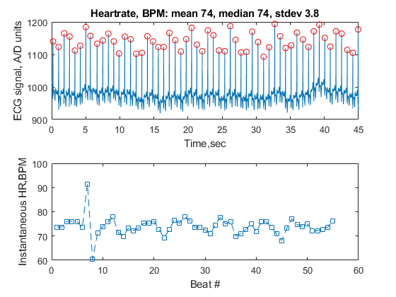

Contents
clear all
close all
list ECG project files
dbtype('MainScript')
fprintf('\n --------------------------- \n')
dbtype('SetupTimeVector')
fprintf('\n --------------------------- \n')
dbtype('FindEcgPeaks')
fprintf('\n --------------------------- \n')
dbtype('CalcInstHR')
fprintf('\n --------------------------- \n')
dbtype('CalcStats')
1 %Alyssa Rose HW4 2-19-18
2 %loads in data
3 load ecgClean.mat
4 %time vector generated
5 tvec = SetupTimeVector(length(ecgData),Fs);
6
7 %peaks in ecgData found
8 threshold = 1050;
9 iPeaks = FindEcgPeaks(ecgData,threshold);
10
11 %heart rate calculated using previous 2 functions' values
12 instBPM = CalcInstHR(tvec,iPeaks);
13
14 %output string made using heart rate data
15 outStr = CalcStats(instBPM);
16
17 %ecg plotted with peaks marked w/ red circles
18 figure
19 subplot(2,1,1)
20 plot(tvec,ecgData)
21 xlabel('Time,sec')
22 ylabel('ECG signal, A/D units')
23 title(outStr)
24 hold on
25 plot(tvec(iPeaks), ecgData(iPeaks),'ro')
26 hold off
27
28 %inst. beats per minute plotted
29 subplot(2,1,2)
30 plot(instBPM,'--s')
31 xlabel('Beat #')
32 ylabel('Instantaneous HR,BPM')
33 %generated plots saved as jpeg file
34 saveas(gcf, 'figure.jpg')
---------------------------
1 function tvec = SetupTimeVector(npoints,Fs)
2 %{
3 returns a vector 'tvec' of times in seconds,
4 of length npoints, starting at t=0 and
5 spaced apart by 1/Fs seconds
6
7 Alyssa Rose HW4 2-19-18
8 %}
9
10 %checks if values for npoints & Fs are allowed
11 if npoints <= 0 | Fs <= 0
12 tvec = [];
13 return
14 %preallocates tvec
15 %creates tvec by adding on a "step size" each loop
16 else
17 tvec = zeros(1,npoints);
18 step = (1/Fs);
19 for k = 2:npoints
20 tvec(k) = step+tvec(k-1);
21 end
22 end
23
24 return
---------------------------
1 function iPeaks = FindEcgPeaks(ecg,threshold)
2 %{
3 find samples in input vector 'ecg' that are
4 peaks, and are above the value 'threshold'
5
6 Alyssa Rose HW4 2-19-18
7 %}
8 n=length(ecg);
9 iPeaks = [];
10
11 %checks if first value is a peak
12 if (ecg(1) > threshold) && (ecg(1)> ecg(2))
13 iPeaks(1) = 1;
14 end
15 %checks if current value is local max and if
16 %the peak is greater than the threshold
17 for m = 2:(n-1)
18 if (ecg(m)>ecg(m-1))&& (ecg(m)>ecg(m+1))
19 if ecg(m)>threshold
20 iPeaks = [iPeaks, m];
21 end
22 end
23 end
24
25 %checks if last value is a peak
26 if (ecg(n)> ecg(n-1)) && (ecg(n) > threshold)
27 iPeaks(n) = n;
28 end
29
30 %gets rid of zeros, only stores values of peaks
31 delete = iPeaks ~= 0;
32 iPeaks = [iPeaks(delete)];
33
34 return
---------------------------
1 function instBPM = CalcInstHR(tvec,iPk)
2 %{
3 given a time vector tvec and list of samples for peaks,
4 returns a vector instBPM with the instantaneous beats per minute
5
6 Alyssa Rose HW4 2-19-18
7 %}
8
9 %converts sec to minutes and creates empty vector
10 tvec = tvec./60;
11 instBPM = [];
12 if length(iPk)<2
13 instBPM = 0;
14 return
15 end
16 %calculates heart rate and stores it in instBPM
17 for k =1:length(iPk)-1
18 heartRate = 1/(tvec(iPk(k+1))- tvec(iPk(k)));
19 instBPM = [instBPM heartRate];
20 end
21 return
---------------------------
1 function outStr = CalcStats(instBPM)
2 %{
3 computes statistics (mean, median, std dev)
4 and defines output string
5
6 Alyssa Rose HW4 2-19-18
7 %}
8
9 %calculates whole number mean value
10 X = mean(instBPM);
11 X=round(X);
12 %calculates whole number median value
13 Y = median(instBPM);
14 Y = round(Y);
15 %calculates standard deviation
16 Z = std(instBPM);
17 %prints out values w/ stdev to 1 decimal
18 outStr = sprintf('Heartrate, BPM: mean %d, median %d, stdev %.1f',X,Y,Z);
19 return
list and the vectorization problem
fprintf('\n\n --------------------------- \n\n')
type('HotTubVectors')
---------------------------
function [tempsHot, timesCold, nOK] = HotTubVectors(time,temp)
%{
Function takes in 2 equal sized vectors; temp(Fahrenheit) & time (hours);
and determines how well the hot tub stays within temp range( 102<=temp<=105).
Alyssa Rose HW4 2-19-18
%}
%extracts temperatures > 105 degrees
tempsHot = temp(temp > 105);
%extracts times when temperature < 102 degrees
%timesCold = time(temp < 102);
t = find(temp < 102);
timesCold = time(t);
%finds # hours when hot tub was in desired range
nOK= sum((temp >= 102) & (temp <= 105));
return
run ecg project
fprintf('\n\n --------------------------- \n\n')
MainScript
---------------------------
